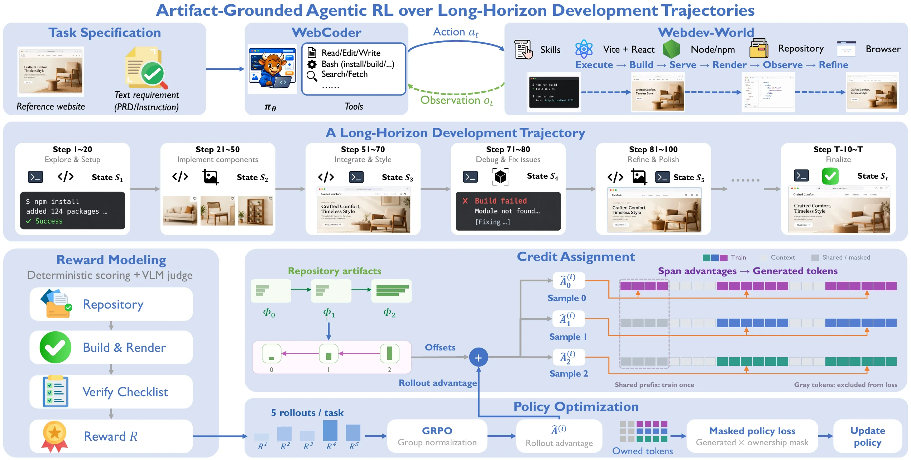
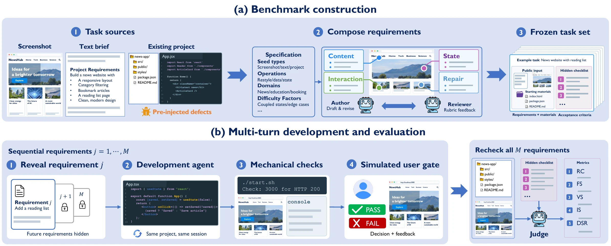
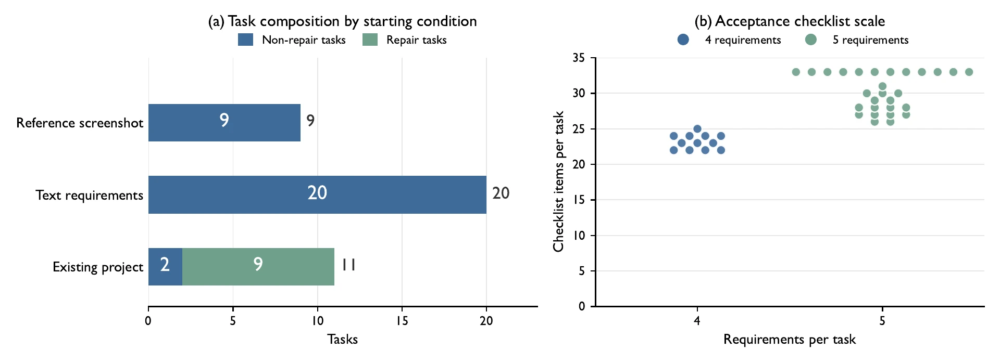
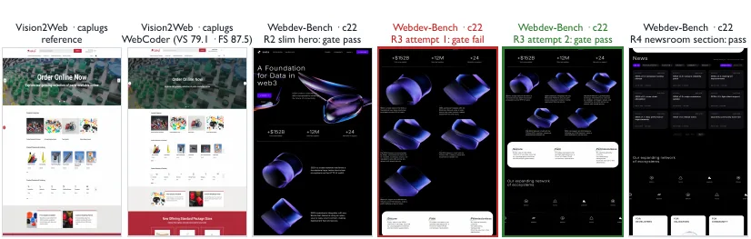
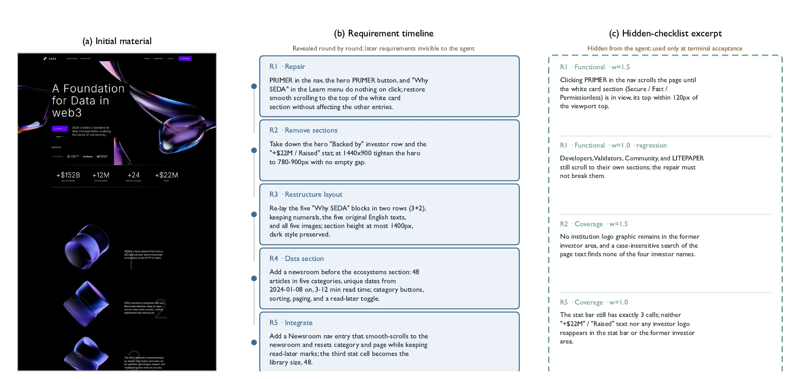
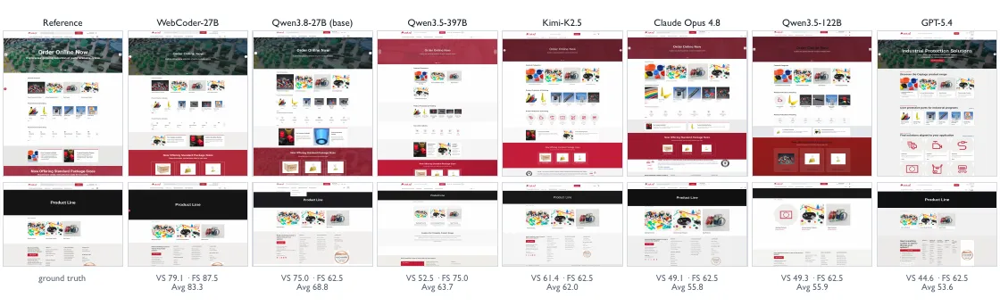
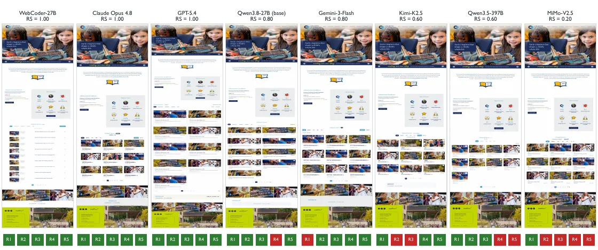
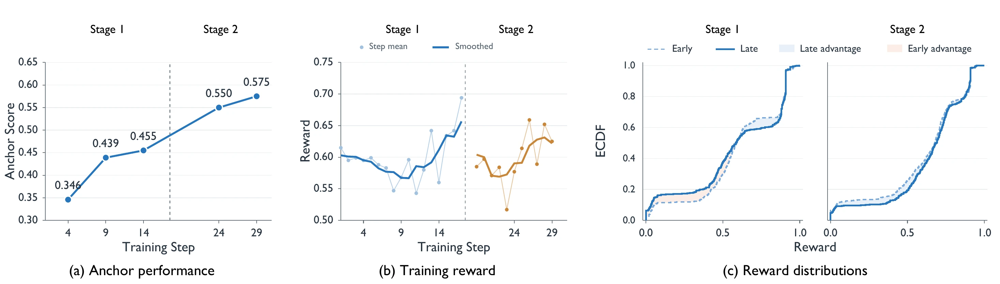
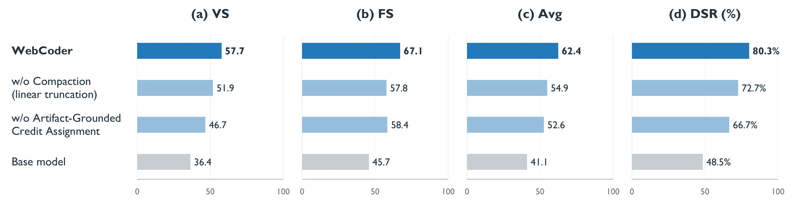
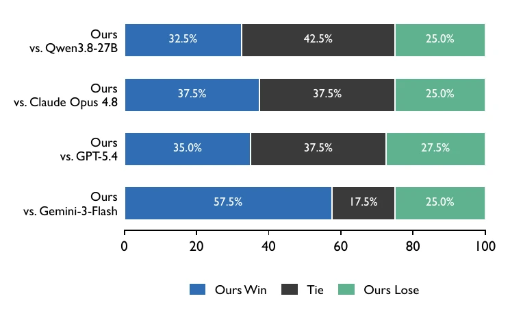

Video
Abstract
Real-world frontend development requires agents to compose reproduction, generation, modification, and repair over an evolving application state. Learning a general policy for this process requires translating heterogeneous execution feedback into task-aligned rewards and effective credit assignment across long sequences of interdependent actions.
We introduce WebCoder, a general frontend development agent trained with artifact-grounded agentic reinforcement learning. Our key idea is to assess diverse development activities through their effects on a shared executable artifact and its satisfaction of task requirements. We build Webdev-World, an executable environment that integrates code editing, application execution, browser inspection, and on-demand skills while preserving project state across interactions. An independent verifier evaluates the final application against task requirements to provide terminal rewards, while changes in intermediate artifact progress redistribute the resulting rollout advantage across development segments. Context compaction and message-tree sample construction support training on trajectories beyond a single context window while avoiding repeated loss computation on shared generated history.
We further introduce Webdev-Bench to evaluate composed development requirements within a single project. On Webdev-Bench, WebCoder-27B raises requirement satisfaction from 64.8 for its Qwen3.8-27B base model to 72.8, exceeding Claude-Opus-4.8 (65.1) and GPT-5.4 (59.6); on Vision2Web, it improves the average visual and functional score from 41.1 to 62.4, on par with Claude-Opus-4.8. Ablation studies confirm the contributions of artifact-grounded credit assignment and long-horizon training.
Method

Webdev-World
An executable environment that integrates code editing, application execution, browser inspection, and on-demand skills, while preserving project state across interactions. The agent sees the consequences of its own edits the way a developer does, through build results and the rendered page.
Artifact-grounded reward and credit assignment
An independent verifier scores the final application against the task's requirement checklist to produce the terminal reward. Changes in intermediate artifact progress then redistribute that rollout advantage across development segments, so a segment that actually moved the application forward is credited for it, while the token-weighted mean advantage set by the terminal reward is preserved.
Long-horizon training
Context compaction keeps long development sessions inside the context window, and message-tree sample construction lets a single trajectory train as several samples without computing the loss twice on shared generated history.
Webdev-Bench
Existing frontend benchmarks score one capability at a time. Webdev-Bench instead evaluates composed development requirements inside a single project: 40 tasks whose requirements arrive over several rounds, each with a hidden checklist, graded against the running application rather than against the source code.


Results
| Model | Vision2Web | Webdev-Bench | ||||||||
|---|---|---|---|---|---|---|---|---|---|---|
| VS | FS | Avg | DSR | RS | VS | FS | IS | Avg | DSR | |
| Proprietary models | ||||||||||
| Claude-Opus-4.8 | 59.1 | 65.9 | 62.5 | 98.5% | 65.1 | 75.0 | 70.7 | 84.1 | 73.7 | 100.0% |
| GPT-5.4 | 51.3 | 64.4 | 57.9 | 97.0% | 59.6 | 72.7 | 70.0 | 81.0 | 70.8 | 100.0% |
| GPT-5 | 23.3 | 64.7 | 44.0 | 98.5% | 53.5 | 64.0 | 65.8 | 74.6 | 64.5 | 100.0% |
| Gemini-3-Pro | 13.3 | 14.6 | 14.0 | 65.2% | 48.0 | 65.8 | 58.5 | 68.5 | 60.2 | 100.0% |
| Gemini-3-Flash | 13.1 | 27.9 | 20.5 | 78.8% | 56.6 | 65.8 | 64.8 | 85.0 | 68.1 | 95.0% |
| Seed-1.8 | 7.0 | 13.3 | 10.2 | 36.4% | 52.6 | 66.5 | 63.8 | 71.5 | 63.6 | 100.0% |
| Open-source models | ||||||||||
| Kimi-K2.5 | 35.1 | 61.0 | 48.1 | 92.4% | 46.8 | 61.5 | 55.0 | 67.7 | 57.7 | 82.5% |
| MiMo-V2.5 | 38.2 | 66.5 | 52.4 | 87.9% | 14.9 | 25.2 | 21.2 | 22.6 | 21.0 | 65.0% |
| Step-3.7-Flash | 22.1 | 47.3 | 34.7 | 95.5% | 10.8 | 20.0 | 14.0 | 19.0 | 15.9 | 60.0% |
| Qwen3.8-27B (our base model) | 36.4 | 45.7 | 41.1 | 48.5% | 64.8 | 77.9 | 68.8 | 79.8 | 72.8 | 95.0% |
| Qwen3.5-397B-A17B | 35.6 | 67.1 | 51.4 | 100.0% | 28.7 | 39.0 | 31.9 | 36.5 | 34.0 | 80.0% |
| Qwen3.5-122B-A10B | 20.2 | 39.0 | 29.6 | 87.9% | 24.6 | 30.4 | 28.9 | 33.1 | 29.3 | 72.5% |
| Qwen3-VL-32B-Instruct | 0.0 | 0.0 | 0.0 | 0.0% | 2.5 | 6.3 | 5.4 | 4.4 | 4.6 | 50.0% |
| Qwen3-VL-8B-Instruct | 0.0 | 0.0 | 0.0 | 0.0% | 0.0 | 0.8 | 0.0 | 0.0 | 0.2 | 30.0% |
| WebCoder-27B | 57.7 | 67.1 | 62.4 | 80.3% | 72.8 | 81.9 | 73.8 | 90.8 | 79.8 | 100.0% |
Bold marks the best value in a column across all models; underline marks the second best.
Examples




Analysis



BibTeX
@article{dou2026webcoder,
title = {WebCoder: Scaling General Frontend Development with
Artifact-Grounded Agentic Reinforcement Learning},
author = {Dou, Zijun and Yang, Zhen and Liu, Xijun and
Zhou, Dongzhuoran and Zeng, Aohan and Tang, Jie},
journal = {arXiv preprint arXiv:2610.23104},
year = {2026}
}